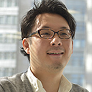

TOPページ 出展のご案内 センス・オブ・ワンダーナイト 選考委員
2014年選考委員
昨年の選考は、以下の「センス・オブ・ワンダー ナイト」選考委員によって行われました。
- ※2015年の選考委員は現在調整中です。
- ※所属・役職は2014年開催時のものです。
- 日本マイクロソフト株式会社
インタラクティブ・エンターテイメント・ビジネス デベロッパーエコシステム
グループシニアマネージャー
田代 昭博 氏 - 1997年にマイクロソフト株式会社入社（現 日本マイクロソフト株式会社）。インタラクティブ・エンターテイメント・ビジネス デベロッパーエコシステムの責任者。Xbox 360、Xbox One 及び Windows、Windows Phoneに向けたゲーム開発者様への技術的な支援、Xbox Oneでインディーデベロッパーを応援するプログラムID@Xbox、アプリケーションの開発支援と促進、Kinect for Windowsビジネスなどマイクロソフトプラットフォームに対するエンターテイメントコンテンツに向けた、開発者に対するビジネスとサービスを担当する技術部門の責任者である。
- UBM Tech Game Network
(Independent Games Festival, Game Developers Conference.)
Simon Carless 氏 -
UBM TechWebのゲーム・ネットワークの上級副社長。世界各地のGame Developer Conference(GDC) ― サンフランシスコをはじめ、オースティン、ドイツ、中国とカナダの総責任者も兼任。Webby賞を2回受賞したゲーム開発者向け専門サイトGamasutra.com、Maggie賞を受賞したGame Developer誌とIndieGames.comを統括している。
サイモン氏は、毎年開催される”サンダンス・ゲーム・フェスティバル”の名誉会長であり、サンフランシスコGame Developers Conferenceで開催されるthe Independent Games Festival、the Independent Games Summit、GDC China（the Independent Game Festival China）、GDC Europe（Independent GameSummit Europe）などのゲーム開発者向け主要イベントのプログラム・アドバイザーも務める。
- 神奈川電子技術研究所 [同人サークル]
サークル代表、ゲーム企画、プログラム
北山 功 氏 -
2002年に神奈川電子技術研究所を立ち上げる。
その後、コミックマーケットに約２０回サークル参加、ドークボットで講演、センス・オブ・ワンダーナイトで講演、IGDAで講演、作品は『僕は森世界の神になる』『天才科学者ばいおるる』『QUALIA』など２０作品以上に及ぶ。
現在も人工生命、セルオートマトンなど得意のAI技術を応用したゲームを創作中。
- Joju Games
Studio Manager
Juan Gril 氏 -
Jojuゲームの創設者兼スタジオマネージャーとして、カジュアルゲーム開発に15年以上の経験を持ち、アタリ社、MTVネットワーク、ディズニーなどグローバル企業を顧客に持っている。
Gril氏は国際的イベント「Casual Connect」の「インディ・ショーケース」のディレクターや、米国Game Developer Conference(GDC)「Free2Play デザイン・アンド・ビジネスサミット」のアドバイザーやIGDA（国際ゲーム開発者協会）が発行する白書（White Paper）の編集長として数々のプロジェクトに関わっている。Yahooゲームスタジオ関係者によると、彼の作品はカジュアルゲームの中では最もクールなものだ、という賞賛を受けている。

- NHN PlayArt
執行役員 Excective Directer
馬場 一明 氏 -
2004年にゲームサーバプログラマーとしてNHN Japan株式会社に入社。ゲーム開発部門、ゲーム事業部門の責任者を経て、執行役員兼スマートフォンゲーム制作室室長。
LINE株式会社との分社化後の現在は、Excective Directerとして社内で開発中のスマートフォンゲーム全般の制作を管理している。
- ジャーナリスト、IGDA日本名誉理事 新 清士 氏
-
1970年生まれ。ゲームやITを中心に活動。
国際ゲーム開発者協会日本（IGDA日本）の設立者で名誉理事。他に、立命館大学映像学部非常勤講師。
主な寄稿先に、日本経済新聞電子版テクノロジー、ビジネスファミ通「デジタルと人が夢見る力」、週刊アゴラなど。著作に、電子書籍『ゲーム産業の興亡』（アゴラ出版局）。電子書籍のセルフ出版サポートサイト「よむネコ」店主。
- ソニー・コンピュータエンターテインメント
パブリッシャーリレーション部
ディベロッパーリレーション課課長
多田 浩二 氏 - 1994年株式会社ソニー・コンピュータエンタテインメント入社。 ディレクターとして複数のPlayStation®タイトルを制作。その後モーションキャプチャースタジオ、サウンドチームのマネジメントに従事し、2000年よりプロデューサーとして複数のタイトル制作に携わる。2013年よりソニー・コンピュータエンタテインメントジャパンアジアにてディベロッパーリレーション業務を担当。

- Necrosoft Games
Director
Brandon Sheffield 氏 -
シェフィールド氏は、カリフォルニア州オークランドに拠点がある独立系ゲーム会社Necrosoft Gameのディレクター。
以前はゲーム開発者向け雑誌の編集長、ゲーム開発者向けオンラインサイトGamasutraの特別寄稿者として活躍。また、同氏の活動のひとつとして、優秀なアジア発のゲームを米国市場に紹介している。同氏は米国Game Developer Conference(GDC)およびIGF中国のアドバイザーも兼任している。

- グリー
マーケティング事業本部
DR2部 第3グループ アソシエイトマネージャー
屋島 新平 氏 -
2006年8月グリー株式会社入社。
KDDI社との共同事業による携帯電話向けGREEのプロジェクトマネージャ、GREE内アバターサービスの責任者、GREE内製プロダクトのディレクターグループ責任者を経て、現在はGREE Platform事業における3rdパーティーアプリの企画とコンサルティングに従事。
- 雑魚雑魚
-
SOWN2011では暗暗迷路(ハドソン賞/GMO賞)、翌年にはTAISO(GMO賞)、昨年はTSURI(BestPresentationAward)と３年連続出場と受賞を果たす。
毎年斬新なアイデア光るアプリを制作するも、内容と関係のないプレゼンを繰り広げ会場を湧かせる。あいつらアプリ作ってないんじゃないか？とゴーストクリエイターの噂が流れる中、ついにSOWN審査員に抜擢される。
"テラスハウスのような台本のないアプリ"を好む中年クリエイティブ集団。
出展社募集中 ［申込締切］5月29日（金）［出展社説明会］7月1日（水） 出展のご案内のダウンロードはこちらから（PDF）